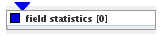

|
|
|

Computes statistics and histograms of data components
| input port | type | description | data acceptors |
|---|---|---|---|
| inField | VNField | ||
| output port | type | description | data schemas |
FIELD STATISTICS
The field statistics module outputs field information and computes statistics and histograms of data components.
Input data
At input the module requires a field.
Parameters
The component drop down list allows to choose one of the components of the input field.
The user can choose between log and linear scale by switching the log scale check box on or off.